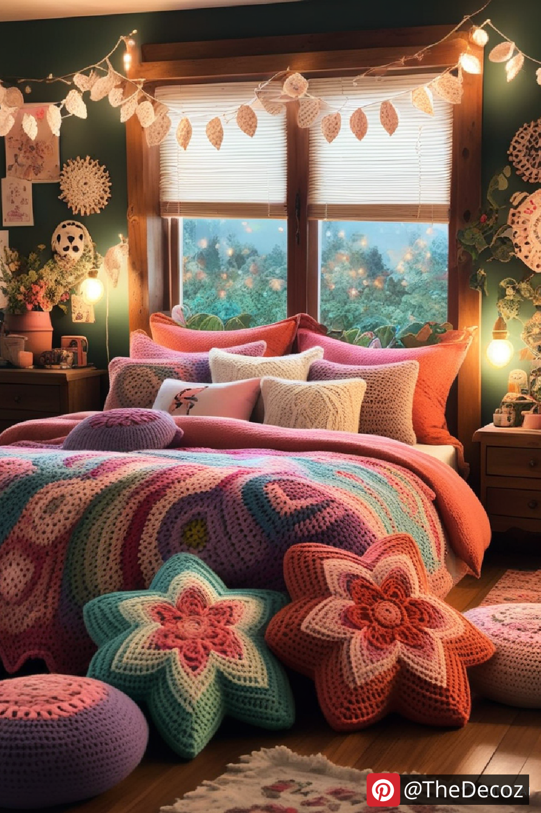
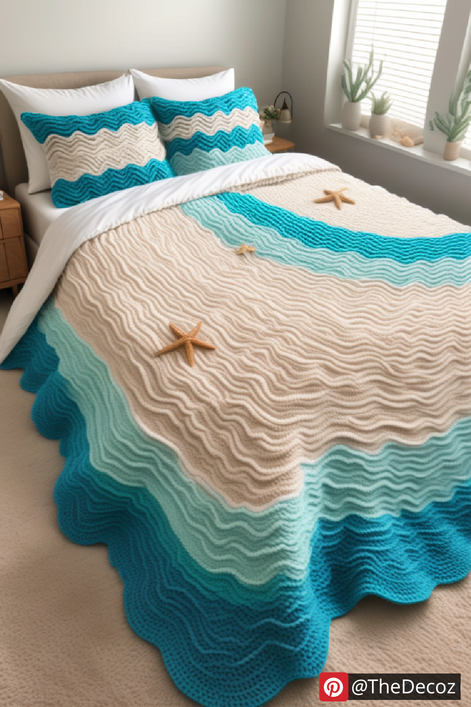
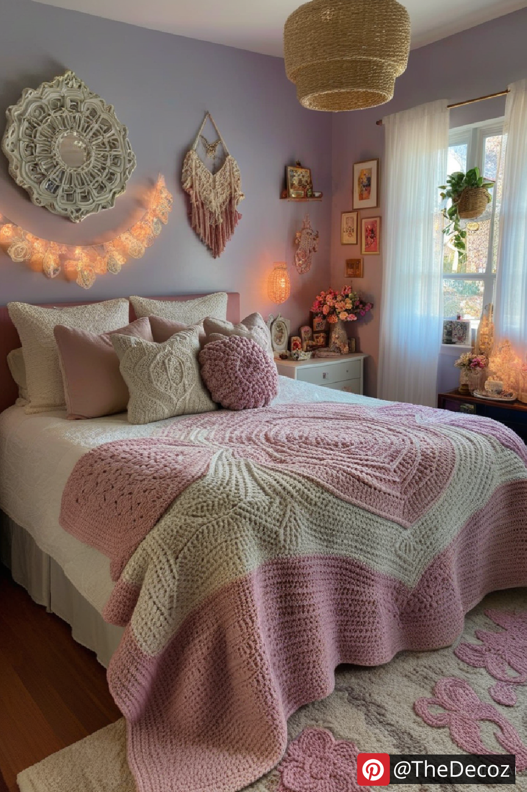
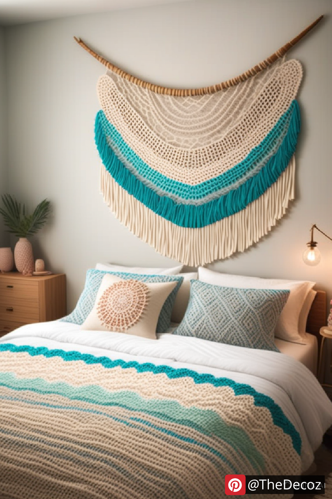
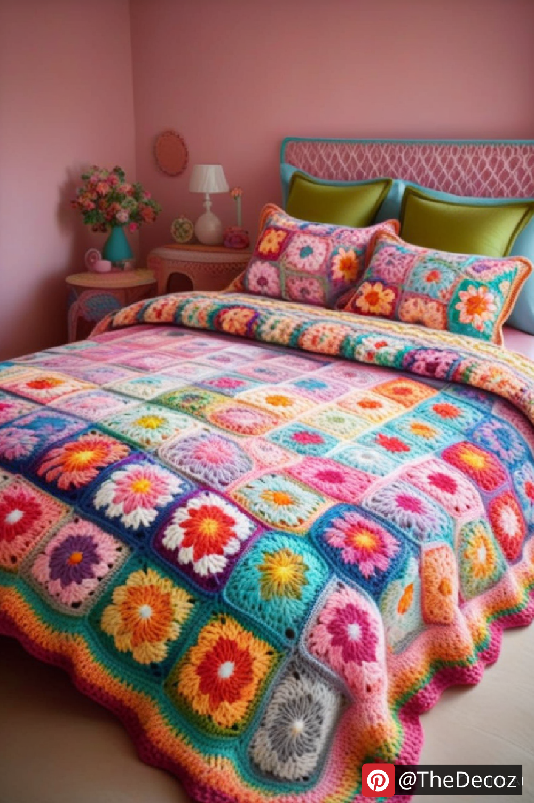

Crochet has made a stylish comeback in interior design, offering a warm, handmade touch to any space. Whether you're looking for cozy accents or eye-catching statement pieces, crochet room decor ideas provide endless inspiration. From bohemian vibes to modern minimalism, here are some creative ways to incorporate crochet into your home decor.
One of the simplest yet most impactful ways to introduce crochet into your space is with a crochet wall hanging. These intricate designs add texture and charm, making them perfect for a boho-chic or rustic look. Opt for neutral colors for a subtle aesthetic or vibrant hues for a bold statement.
Revamp your living room or bedroom with crochet pillow covers. Handmade cushions not only enhance comfort but also add a layer of sophistication. Choose intricate lace designs for a vintage feel or chunky crochet patterns for a cozy, farmhouse-style vibe.
A crochet bedspread or throw can instantly elevate your bedroom decor. Whether you go for a classic granny square pattern or a more modern geometric design, these pieces bring warmth and texture. Layering a crochet throw over a solid-colored bedspread creates a stylish contrast.
Indoor plants and crochet go hand in hand. Crochet plant hangers are a trendy way to display greenery while adding an artisanal touch. Hanging planters made with macramé-style crochet patterns give your home a fresh and airy feel.
For an elegant dining experience, crochet table runners and placemats are a must-have. They bring a handcrafted, vintage charm to your table setting while protecting surfaces from spills and scratches. Pair them with wooden or ceramic tableware for a rustic-chic look.
Storage can be stylish too! Crochet baskets serve as both functional and decorative pieces, perfect for organizing small items like remote controls, keys, or crafting supplies. Use thick yarn for a sturdy design that maintains its shape.
For a truly unique decor idea, consider a crochet lampshade. The intricate patterns cast beautiful shadows, creating a cozy ambiance. Light-colored crochet allows for a softer glow, while darker tones make for a dramatic effect.
A crochet rug adds warmth and comfort to any room. Whether it's a circular rug for the nursery or a large rectangular one for the living room, handmade rugs bring personality to your flooring. Choose durable, machine-washable yarn for easy maintenance.
Small details can make a big difference! Crochet curtain ties add a delicate touch to your window treatments. Floral patterns or simple braided designs can complement various decor styles.
Give your old ottoman a new lease on life with a crochet cover. These cozy and stylish covers add texture to your furniture, making them stand out as focal points in your space.
Incorporating crochet room decor ideas into your home is a great way to add a personal, handcrafted touch. Whether you create these pieces yourself or purchase them from talented artisans, crochet decor offers timeless elegance and coziness. Experiment with different patterns, colors, and styles to create a space that reflects your personality and taste.
    